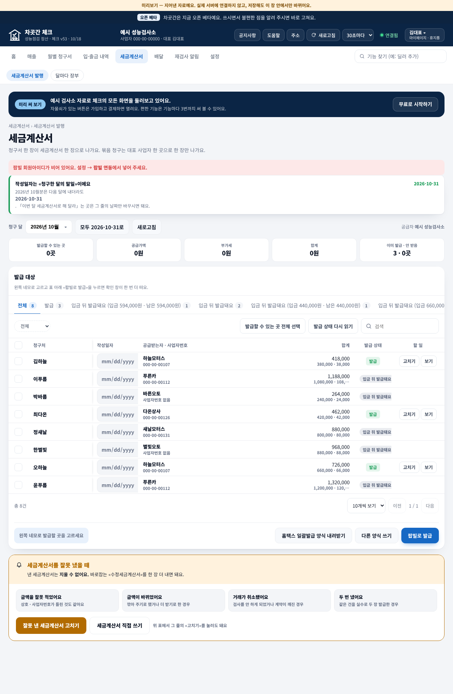
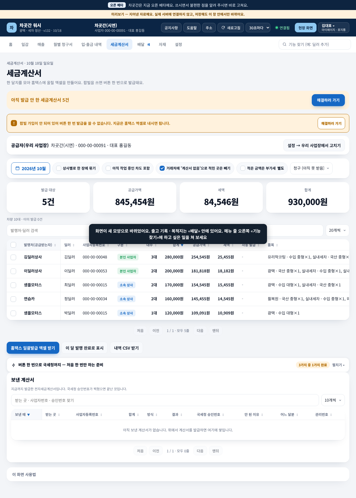
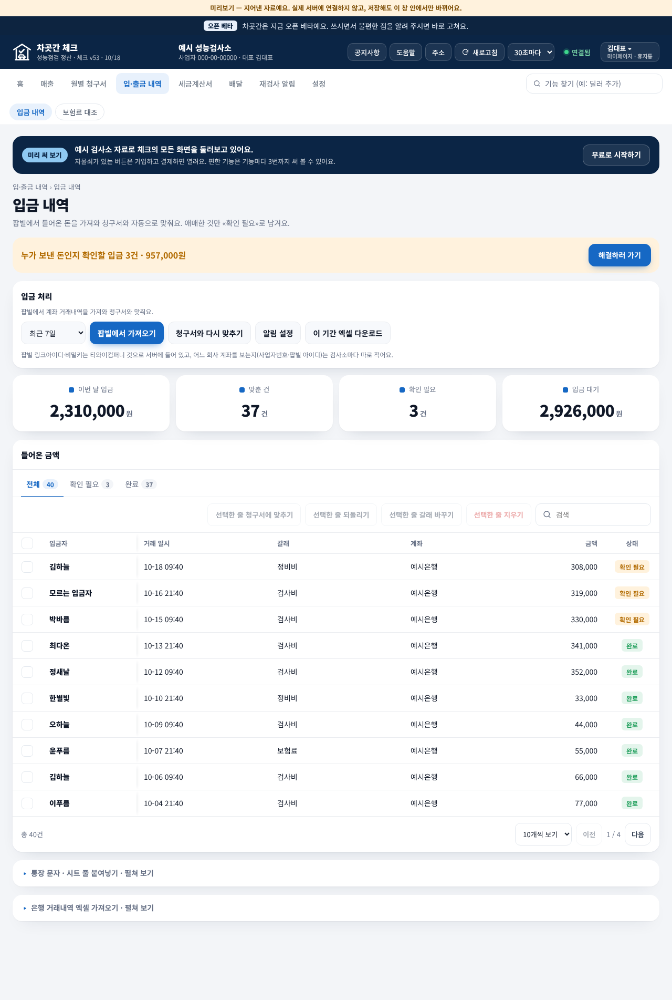
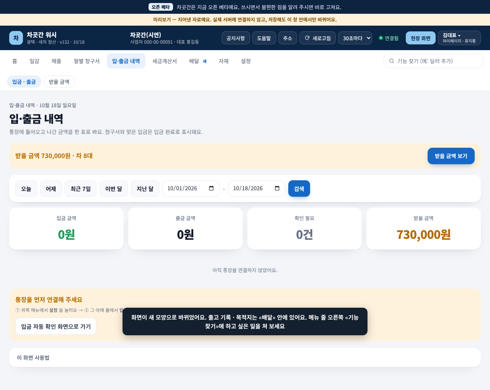
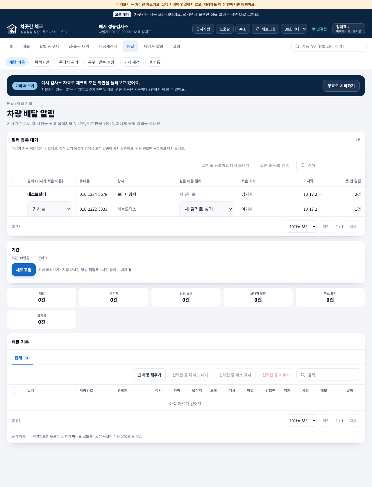
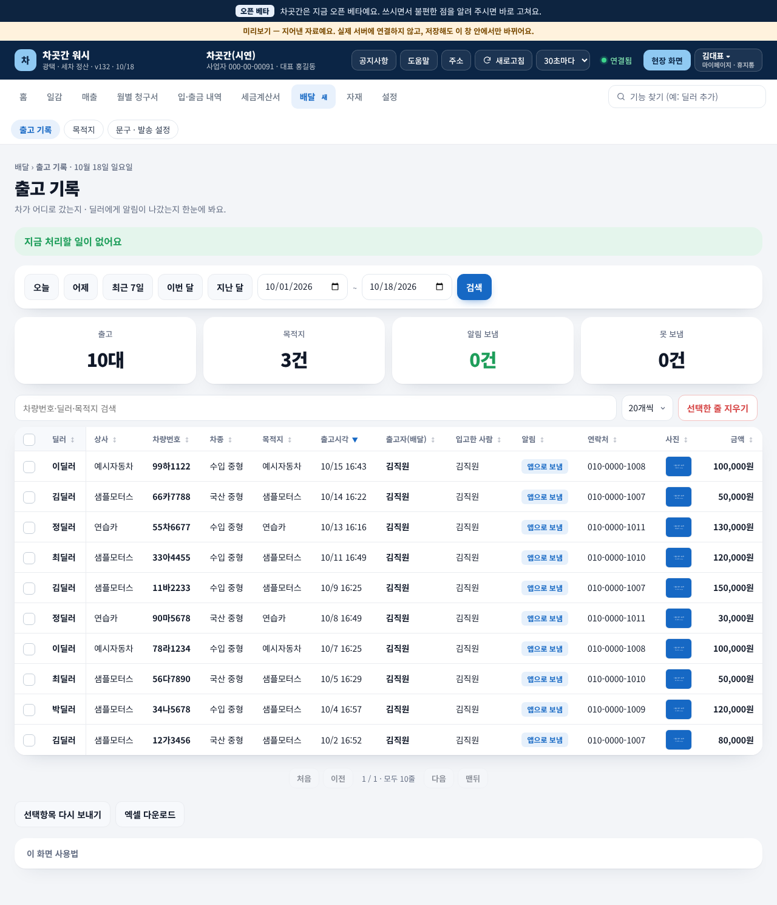
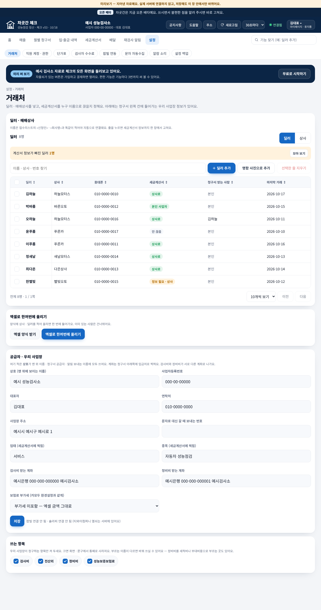
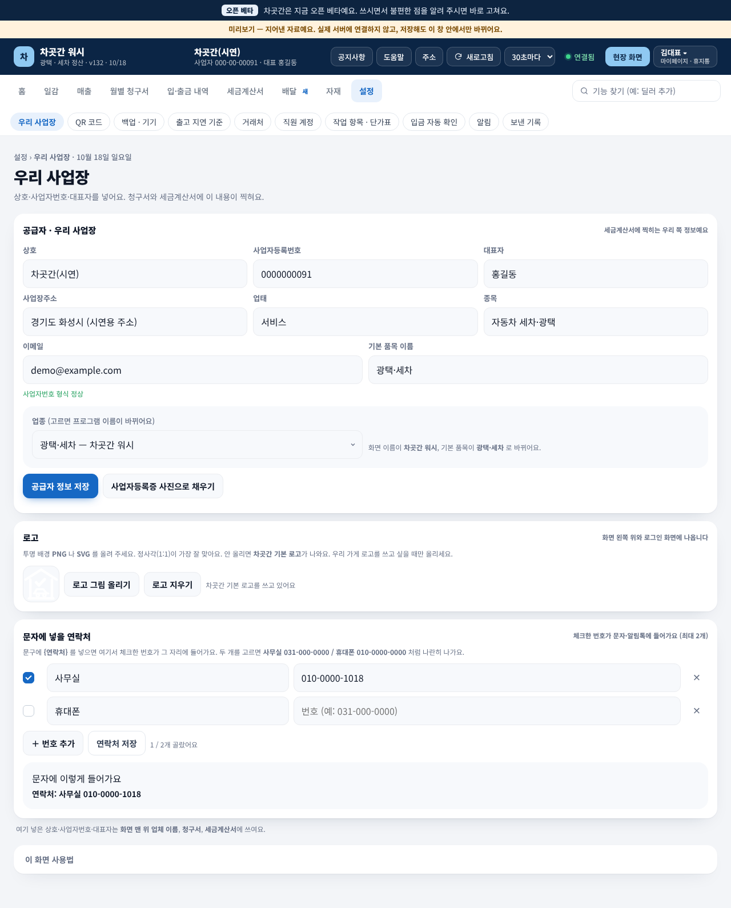

워시를 기준으로, 체크의 세금계산서 · 입·출금 내역 · 배달 · 설정을 워시와 똑같이 맞추는 안 하나예요. 화면마다 왼쪽은 체크 지금(전), 오른쪽은 워시 모양(후 · 체크도 이대로)이고, 아래 표에 체크에서 바꿀 곳을 적었어요. 사진은 모두 미리보기의 지어낸 자료예요.
원칙 (새 규칙 5-1) 같은 이름의 탭 · 칸 · 설정 항목은 모양 · 차례 · 글자 · 단추가 100% 같아요. 다른 것은 제품 전용 칸뿐이에요(워시 현장 화면 · 자재 · 출고 지연 기준 · QR 코드, 체크 재검사 알림 · 보험료 대조 · 검사자 수수료 · 달마다 장부). 워시는 바꾸지 않고 체크를 워시 모양으로 옮겨요. 체크가 지금 하는 기능은 빼지 않고 자리만 옮겨요.
워시 v132(v134와 화면 같음) · 체크 v53 미리보기에서 탭을 하나씩 눌러 본 결과예요.
| 탭 | 워시 (기준) | 체크 지금 | 체크에서 바꿀 곳 |
|---|---|---|---|
| 홈 | 숫자 칸: 오늘 입고차량 · 작업 중 · 오늘 출고차량 · 이번 달 청구 금액 | 숫자 칸: 이번 달 검사 건수 · 청구 합계 · 입금 · 입금 대기 / 청구처 표 | 체크 바꿈 홈 차례를 워시와 같게(바로가기 → 할 일 → 숫자 칸 4 → 달력 · 이번 달 입금). 숫자 칸은 «오늘 검사 차량 · 작업 중 · 오늘 출고차량 · 이번 달 청구 금액» |
| 일감 | 입고 · 출고 내역 | 탭 없음 | 체크 바꿈 둘째 자리에 «일감» 탭(검사 차 목록). 이름은 대표님 확인 중 |
| 매출 | 안쪽 칸 없음 · 달별 표 | 매출 내역 · 자료 올리기 | 체크 바꿈 «자료 올리기»는 설정 맨 아래 체크 전용 묶음으로, 매출은 한 화면(워시 표 칸 차례) |
| 월별 청구서 | 안쪽 칸 없음 · 딜러(받는 분) 표 | 월별 청구서 · 청구처 묶음 · 알림톡 템플릿 | 체크 바꿈 표 칸을 워시 차례로(딜러 · 소속 상사 · 대수 · 작업 내역 · 세금계산서 · 총금액 · 입금 기한 · 받을 금액 · 보낼 번호 · 발송). «알림톡 템플릿»은 설정 › 알림으로. «청구처 묶음»은 체크 전용(묶음 쓰는 법은 대표님 확인 중) |
| 입·출금 내역 | 입금 · 출금 / 받을 금액 | 입금 내역 / 보험료 대조 | 체크 바꿈 아래 «입·출금 내역» 표 |
| 세금계산서 | 안쪽 칸 없음 | 세금계산서 발행 / 달마다 장부 | 체크 바꿈 아래 «세금계산서» 표 |
| 배달 | 출고 기록 · 목적지 · 문구 · 발송 설정 | 배달 기록 · 목적지별 · 목적지 관리 · 문구 · 발송 설정 · 기사 계정 · 휴지통 | 체크 바꿈 아래 «배달» 표 |
| 설정 | 우리 사업장 · QR 코드 · 백업 · 기기 · 출고 지연 기준 · 거래처 · 직원 계정 · 작업 항목 · 단가표 · 입금 자동 확인 · 알림 · 보낸 기록 | 거래처 · 직원 계정 · 권한 · 단가표 · 검사자 수수료 · 팝빌 연동 · 문자 자동수집 · 알람 소리 · 설정 백업 | 체크 바꿈 아래 «설정» 표 |
| 제품 전용 탭 | 자재 | 재검사 알림 | 제품 전용 세금계산서와 설정 사이 자리 그대로 |
| 머리말 | 로고 · 업체 · 공지 · 도움말 · 주소 · 새로고침 · 30초마다 · 연결됨 · 현장 화면 · 사람 단추 | 같음 (현장 화면만 없음) | 같음 로고는 둘 다 공통 부품 1.10의 차곳간 CI로 |


| 칸 | 체크 지금 | 바뀐 뒤 (워시와 같게) |
|---|---|---|
| 안쪽 칸 | 세금계산서 발행 · 달마다 장부 | 체크 바꿈 발행 화면은 안쪽 칸 없이 한 화면. «달마다 장부»는 체크 전용 칸으로 남김 |
| 제목 · 설명 | 세금계산서 / 청구서 한 장이 세금계산서 한 장… | 체크 바꿈 «세금계산서» / «한 달치를 모아 홈택스에 올릴 엑셀을 만들어요. 팝빌을 쓰면 버튼 한 번으로 발급돼요.» |
| 할 일 띠 | 빨간 글 «팝빌 회원아이디가 비어 있어요» | 체크 바꿈 주황 띠 «아직 발급 안 한 세금계산서 N건 [해결하러 가기]» + 팝빌 안내 띠 «팝빌 가입이 안 되어 있어… [해결하러 가기]» |
| 작성일자 안내 카드 | «작성일자는 청구한 달의 말일이에요» 큰 카드 | 체크 바꿈 접힌 도움 카드 안으로 |
| 공급자 줄 | 오른쪽 작은 글 «공급자 예시 성능검사소» | 체크 바꿈 «공급자(우리 사업장) 상호 · 사업자번호 · 대표 [설정 → 우리 사업장에서 고치기]» 줄 |
| 도구줄 | 청구 달(선택 상자) · 모두 2026-10-31로 · 새로고침 | 체크 바꿈 [2026년 10월] 달력 · 상사별로 한 장에 묶기 · 아직 작업 중인 차도 포함 · 거래처에 '계산서 없음'으로 적힌 곳은 빼기 · 적은 금액은 부가세 별도 · 청구(아직 못 받음) |
| 숫자 칸 | 5칸(발급할 수 있는 곳 · 공급가액 · 부가세 · 합계 · 이미 발급·안 받음) | 체크 바꿈 4칸 «발급 대상 · 공급가액 · 세액 · 합계» |
| 표 위 | 상태 탭(전체 · 발급 · 입금 뒤 발급돼요 …) · 선택 상자 · 단추 2개 · 검색 | 체크 바꿈 «차량 N대 · 이미 발급 N건» 한 줄 + 검색 «발행처·딜러 검색» + 보기 개수. 상태로 걸러 보기는 표의 «자동 발급» 칸 머리를 눌러 정렬로 |
| 표 칸 | 청구처 · 작성일자 · 공급받는자·사업자번호 · 합계 · 발급 상태 · 할 일 | 체크 바꿈 발행처(공급받는자) · 딜러 · 사업자등록번호 · 구분 · 대수 · 합계 · 공급가액 · 세액 · 자동 발급 · 품목. 체크의 작성일자 칸과 «모두 2026-10-31로» 단추는 체크 전용으로 맨 끝 칸 머리에. 입금 전 줄은 «입금 뒤 발급돼요» |
| 아래 단추 | 홈택스 일괄발급 양식 내려받기 · 다른 양식 쓰기 · 팝빌로 발급 | 체크 바꿈 홈택스 일괄발급 엑셀 받기 · 이 달 발행 완료로 표시 · 내역 CSV 받기 + «버튼 한 번으로 국세청까지 — 처음 한 번만 하는 준비»(팝빌 발급, 보내기 전 «누구에게 · 몇 건 · 얼마» 확인 창). «다른 양식 쓰기»는 접힌 도움 안으로 |
| 보낸 계산서 | 없음 (잘못 냈을 때 안내 상자) | 체크 바꿈 «보낸 계산서» 표(보낸 때 · 받는 곳 · 사업자등록번호 · 합계 · 방식 · 결과 · 국세청 승인번호 …). 수정 계산서 안내는 접힌 도움으로 |


| 칸 | 체크 지금 | 바뀐 뒤 (워시와 같게) |
|---|---|---|
| 안쪽 칸 | 입금 내역 · 보험료 대조 | 체크 바꿈 «입금 · 출금 · 받을 금액» + 체크 전용 «보험료 대조» 맨 끝 |
| 제목 · 설명 | 입금 내역 / 팝빌에서 들어온 돈을 가져와… | 체크 바꿈 «입·출금 내역» / «통장에 들어오고 나간 금액을 한 표로 봐요. 청구서와 맞은 입금은 입금 완료로 표시돼요.» |
| 할 일 띠 | «누가 보낸 돈인지 확인할 입금 3건» [해결하러 가기] | 체크 바꿈 워시처럼 «받을 금액 2,926,000원 · 딜러 N명 [받을 금액 보기]». 확인할 입금은 숫자 칸 «확인 필요»를 누르면 걸러져요 |
| 도구줄 | «입금 처리» 카드: 최근 7일(선택 상자) · 팝빌에서 가져오기 · 청구서와 다시 맞추기 · 알림 설정 · 엑셀 다운로드 | 체크 바꿈 오늘 · 어제 · 최근 7일 · 이번 달 · 지난 달 · 기간(달력) · [검색]. 팝빌 가져오기 · 청구서와 다시 맞추기 · 엑셀 받기는 설정 › 입금 자동 확인으로, «알림 설정»은 설정 › 알림으로 |
| 숫자 칸 | 이번 달 입금 · 맞춘 건 · 확인 필요 · 입금 대기 | 체크 바꿈 «입금 금액 · 출금 금액 · 확인 필요 · 받을 금액» |
| 표 | 입금자 · 거래 일시 · 갈래 · 계좌 · 금액 · 상태 (+ 상태 탭) | 체크 바꿈 워시 입출금 표와 같은 칸(입금자 · 거래 일시 · 입금/출금 · 계좌 · 금액 · 상태). «갈래»(검사비 · 정비비 · 보험료)는 체크 전용 칸. 상태 걸러 보기는 숫자 칸 «확인 필요»를 눌러서 |
| 아래 | 통장 문자 · 시트 붙여넣기 / 은행 엑셀 가져오기 (접힘) | 체크 바꿈 «통장을 먼저 연결해 주세요 [입금 자동 확인 화면으로 가기]» 안내 + 접힌 도움. 붙여넣기 · 엑셀 가져오기는 설정 › 입금 자동 확인 안으로 |


| 칸 | 체크 지금 | 바뀐 뒤 (워시와 같게) |
|---|---|---|
| 안쪽 칸 | 배달 기록 · 목적지별 · 목적지 관리 · 문구 · 발송 설정 · 기사 계정 · 휴지통 | 체크 바꿈 «출고 기록 · 목적지 · 문구 · 발송 설정» 3칸. 목적지별 보기는 «목적지» 안 보기 바꾸기로, 기사 계정은 설정 › 직원 계정으로, 휴지통은 사람 단추 › 휴지통으로 |
| 숫자 칸 · 도구줄 | 제각각 | 체크 바꿈 워시와 같게 숫자 칸 «출고 · 목적지 · 알림 보냄 · 못 보냄», 도구줄은 워시 배달 도구줄 그대로 |
| 알림 · 상태 글자 | 못 간 알림 · 마지막 … (제각각) | 체크 바꿈 워시 알림 칸 글자 그대로(예: «앱으로 보냄»). «대기 · 가는 중 · 도착 · 사진» 네 단계는 월요일 뒤 워시 작은 판에서 두 제품 함께 정해요 |
| 표 칸 | 딜러(기사가 적은 이름) · 휴대폰 · 상사 · 같은 이름 딜러 · 적은 기사 · 마지막 · 못 간 알림 | 체크 바꿈 딜러 · 상사 · 차량번호 · 차종 · 목적지 · 출고시각 · 출고자(배달) · 입고한 사람 · 알림 · 연락처 · 사진 · 금액. 체크의 «같은 이름 딜러» 가려내기는 설정 › 거래처 안으로 |
| 단추 | 제각각 | 체크 바꿈 워시 글자 그대로 «선택한 줄 지우기 · 선택항목 다시 보내기 · 엑셀 다운로드». 지우기 · 다시 보내기 앞에는 «누구에게 · 몇 건» 확인 창 |


| 워시 항목 (이 차례) | 체크 지금 | 바뀐 뒤 |
|---|---|---|
| 우리 사업장 | 없음 (공급자 정보가 화면마다 흩어짐) | 체크 바꿈 새로 둠 — 워시 글자 그대로: 상호 · 사업자등록번호 · 대표자 · 사업장주소 · 업태 · 종목 · 이메일 · 기본 품목 이름 · 업종 + «로고» · «문자에 넣을 연락처» 카드 |
| 백업 · 기기 | 설정 백업 | 체크 바꿈 이름 «백업 · 기기», 셋째 자리로 |
| 거래처 | 거래처 | 체크 바꿈 표 칸 · 단추를 워시와 같게(딜러 · 상사 · 휴대폰 · 세금계산서 · 청구서 받는 사람). 배달의 «같은 이름 딜러» 가려내기도 여기로 |
| 직원 계정 | 직원 계정 · 권한 + 배달의 기사 계정 | 체크 바꿈 이름 «직원 계정». 권한 고르기와 기사 계정도 이 안으로 |
| 작업 항목 · 단가표 | 단가표 | 체크 바꿈 이름 «작업 항목 · 단가표» |
| 입금 자동 확인 | 팝빌 연동 · 문자 자동수집 | 체크 바꿈 두 칸을 «입금 자동 확인» 하나로(팝빌 통장 · 통장 문자 · 엑셀 가져오기 · 청구서와 다시 맞추기). 팝빌 세금계산서 발급용 회원아이디는 세금계산서 화면 «처음 한 번만 하는 준비»로 |
| 알림 | 알람 소리 · (월별 청구서 › 알림톡 템플릿) · (입금 처리 › 알림 설정) | 체크 바꿈 «알림» 하나에 알림톡 문구 · 알람 소리 · 입금 알림 |
| 보낸 기록 | 없음 | 체크 바꿈 새로 둠 — 알림톡 · 문자 보낸 기록 |
| QR 코드 · 출고 지연 기준 | — | 워시 전용 체크엔 없음 |
| (체크 전용 묶음 · 맨 아래) | 검사자 수수료 · (매출 › 자료 올리기) | 체크 전용 «검사자 수수료 · 자료 올리기» |
확인 뒤 — 체크 방이 새 판 이름으로 따로 만들어 확인한 뒤 바꿔치기해요(지금 판은 그대로 두고 되돌리는 법 함께). 네 화면은 디자인 방이 공통 부품으로 묶어 워시 · 체크가 같은 파일을 붙여요. 워시는 이번에 바꾸지 않아요.